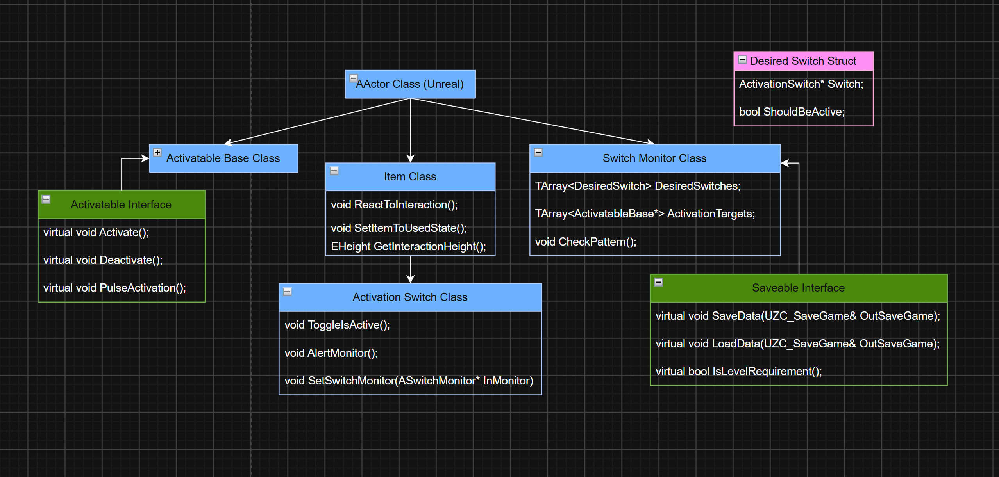

Zappy Cats: Puzzles and Obstacles

C++, UE5 Blueprints
Design Goals...
I wanted the puzzles and obstacles for Zappy Cats to feel dangerous enough that the Player knew to be careful, but not so much that they were scary. The game is meant to be silly and fun, so the obstacles had to suit that.
Features...
- Swinging axes and maces with variable swing speed and damage amount
- Modular spinning blade towers with variable rotation speed and damage amount. Player can stand atop them safely but will take damage from the edges of the blades
- Floor spikes that can rise up and down at random or on a timed pattern, depending on designer's choice
- Spontaneously combusting fire jets inspired by the fire swamp from the Princess Bride
- Pressable, shootable, and shockable buttons which require different Player interactions to activate, creating oportunities for a variety of puzzles
- Destructible obstacles Player can shoot to destroy in order to unblock paths
- Moving Platforms, and Jump Rings to launch the Player across vast distances, optionally enabled through buttons/puzzles
- Enemy Satellite that rotates while tracking Player's location and fires lasers
- Free standing and wall-mounted cannons that fire canonballs at the Player
- Various types of forcefields to block paths or apply gameplay effects
Approach...
My focus when coding all of these different elements was to give myself tools that were versatile and modular, so that I would have more choices to craft unique moments in the game. I created each C++ class knowing I was going to extend them in Blueprints and that I would want access to certain variables and functions. Being both the programmer and designer was really helpful in this case!

Simplified class diagram showing the relationship between classes used to create puzzles.
I created three base classes to help me craft unique obstacles and puzzles. The Activatable Base class is used for any actor that needs to be activated or deactivated by some player action. The Jump Rings, Moving Platforms, Floor Spikes, and many others all use this class as their parent in their Blueprints.
The Activation Switch class is used for the different buttons in the game. It's set up so that it would be easy to add other switch types like a lever or keypad. It inherits from the Item class so that Player interaction is already built in.
The Activation Switch and Activatable Base classes made it easy to set up direct one to one puzzles, where you press a button and something activates, but I wanted to make more complex systems. I created the Switch Monitor class to manage groups of switches and their targets. This way a puzzle could involve mutliple switches that may need to be set in a certain pattern in order to activate or deactivate a collection of objects. It also saves the state of its targets, so that if the Player has already solved a puzzle they don't need to do it again when returning to a saved game.
The Switch Monitor also handles how buttons are meant to be interacted with, such as which switches in a puzzle are supposed to be on and which ones off. It can also check every switch instantly, or give the Player a time limit before it checks. If the pattern is incorrect it will reset the switches so the Player has a fresh start to try again.
Variation...
For obstacles that need to be moving or otherwise active when the player reaches them, I extended Unreal's TriggerBox class to trigger each obstacles' "On" state when the player entered the trigger volume. I added a few options for constant activation or a timed switch between active/inactive states. I used this to activate the swinging axes, fire jets, and spike plates.
To create the Enemy Satellite and Cannons, I created Blueprint classes that inherited from my Enemy Manager and AutoShooter classes, respectively. The satellite uses a collision sphere to detect the player and begin attacking, and the cannon uses a Pawn Sensing Component. Both will fire projectiles at the Player as long as they are in range and visible. The Satellite serves as the manager for the enemies in the Space Diner level, as well as providing another obstacle to overcome.
Refinement...
The following are Spoiler Alerts! When designing the levels I tried to create puzzles and obstacles that were both challenging and fun. I anticipated where Players might get frustrated or confused, and added subtle hints to help them through. These were mainly visual hints, though some of the NPCs give verbal hints as well.


(L) A four button puzzle that requires a certain pattern to activate the moving platform (the wooden circle in the middle). (R) Players can explore to find this treasure map, which shows the correct button states.
Creating obstacles in the Space level was a unique challege as I couldn't use jump-based platforming. The Player flies around on a donut in this level, so one of the things I did was to create a Forcefield that disables this ability.


(L)The purple forcefield disables the player's ability to ride donuts. They must disable it to progress. (R) The buttons must be activated in a certain pattern. Observant Players will find this easy by using the cluster of red and blue stars, which map out the buttons, as a guide.


(L) Broken trees warn the Player of the dangerous spinning blades. (R) They were also used to warn about nearby cannons.

(L) Another four button puzzle. Each of the hexagonal rocks has a button on its side, two aren't visible here due to the camera angle. To solve this puzzle and deactivate the forcefield (the blue wall in the background), players must activate the correct buttons within a time limit. I used glowing blue spores and mushrooms throughout this level to signify electric activity. You can see the spores are only on three of the four rocks, implying those buttons are the ones that need to be activated.
Retrospective...
It was pretty easy to create unique puzzles once I got all of the base classes working. That said, there's always room for improvement. One thing I'd do differently is the buttons. They all inherit from the Item class because it has Player interaction already set up, but only the pressable button actually needs this! I added the shockable and shootable buttons after already setting up pressable buttons, so that's why I just used the same parent class. It would've made more sense to create an interface for buttons and switches, that way the different types wouldn't need to use the same parent class.
I wanted to do more with the Space level, but it was a challenge to come up with obstacles and platforming that didn't rely on the Player needing to jump. Unreal has a "Custom Gravity Zone" plugin that would've been cool to try out here. With it you could set up some neat gravity puzzles. Maybe next time!